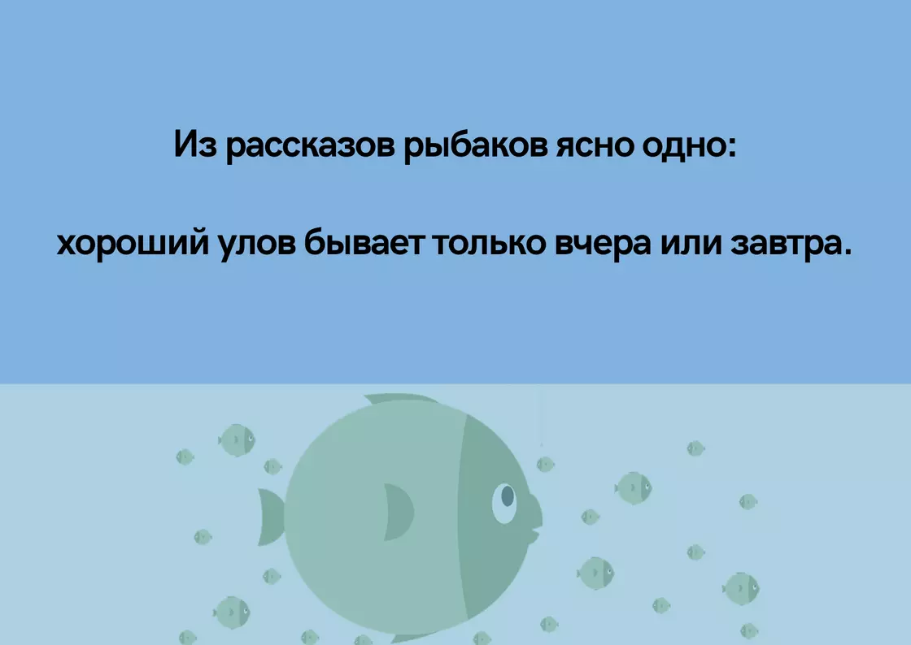

Рыболовный клуб "Мокрый карасик"
Рыболовный клуб "Мокрый карасик"


Анекдоты
— Скажите, как узнать, что перед вами настоящий морж?
— Легко! Настоящие моржи купаются голыми.
— То есть, если кто-то купается в проруби в одежде, то это точно не морж?
— Нет. Это рыбак.
— Легко! Настоящие моржи купаются голыми.
— То есть, если кто-то купается в проруби в одежде, то это точно не морж?
— Нет. Это рыбак.

Семья едет в машине. Маленький сын спрашивает у мамы:
— Мам, а ты мне удочку купишь?
— Конечно! И удочку тебе купим, и лодку к ней купим, и друзей-алкашей купим, чтобы все как у отца было!
— Мам, а ты мне удочку купишь?
— Конечно! И удочку тебе купим, и лодку к ней купим, и друзей-алкашей купим, чтобы все как у отца было!
Когда рыбак увидел, что сом не только сорвался, но и хвостом разбил водку, охлаждавшуюся в воде, сердце
его не выдержало, и из глаз полились слезы.